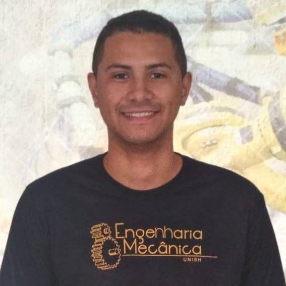

Gabriel Dalseco dos Santos

Idade: 23 anos
Profissão: engenheiro mecânico.
Sou o Gabriel, mais conhecido como “coruja”, um Engenheiro Mecânico
formado pelo Centro Universitário de Belo Horizonte (Uni-BH).
Tenho 23 anos, sou brasileiro, residente na cidade de Belo Horizonte-MG
e tenho vivência em manutenção mecânica de máquinas e equipamentos.
Atualmente estudo na escola do futuro @Trybe para Desenvolvimento de Software nas mais
modernas tecnologias do mercado.
Soft Skills
- Alta absorção de novos conhecimentos;
- Alta flexibilidade para adaptação;
- Boa capacidade e vivência no desenvolvimento de projetos;
- Comprometimento com resultados;
- Movido por desafios;
- Visão analítica para resolução de problemas.
Hard Skills
- Acompanhamento de sistemas elétricos (Circuitos elétricos, inversor de frequência e contatores);
- Desenho técnico computacional: AutoCad e SolidWorks;
- Ensaios não destrutíveis: ensaio visual, líquido penetrante e partícula magnética;
- Execução de soldagem por eletrodo revestido e Oxi-gás;
- Gestão de projetos: Metodologia CANVAS, análise de stakeholders, levantamento de requisitos,
análise de viabilidade, definição de escopo, análise de qualidade e orçamento;
- Inglês intermediário;
- Leitura e interpretação de Desenho Técnico;
- Manutenção e acompanhamento dos sistemas pneumáticos (FluidSIM, compressores e válvulas de controle direcional);
- Noção de programação: HTML, CSS e JS.
- Normas de segurança do trabalho: Gestão 5S, NR 12, NR 13 (aplicação em uma caldeira de categoria B) e NR 34;
- Sistemas pneumáticos: FluidSIM, compressores e válvulas de controle direcional;
Objetivo
Sou movido por desafios e acredito ser esse o meu destaque de soft skill.
Busco constantemente por novos aprendizados, objetivando adquirir o máximo de conhecimento
possível a cada desafio proposto. Por mais que esteja em uma situação difícil existem sempre
outras alternativas, desistir não é uma opção para mim!
Frase motivacional
"Se o plano A não funciona, o alfabeto tem mais 25 letras; 204 se você estiver no Japão.” (Claire Cook)
Para retorna ao início:
Clique aqui.
Blog legal sobre o tema:
Romance.